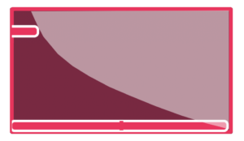

Les termes et procédés utilisés dans les activités Fonofone, par ordre alphabétique.
Empilement par ajout progressif de motifs mélodiques ou de sons en boucle (répétitifs), de même famille ou pas. L’accumulation peut être également produite par l’ajout progressif d’instruments sur un même motif musical répété, par exemple le Boléro, de Maurice Ravel, ou par l’ajout de voix à différentes hauteurs.
Le chant diphonique est une technique vocale permettant à une personne de produire deux sons distincts, d’une part le bourdon, son-pédale de base, d’autre part des variations harmoniques du son soutenu de base. Voir : Chant diphonique (Wikipédia).
On en trouve plusieurs exemples sur le web, dont : cette vidéo.
Un cluster (grappe de sons voisins) est constitué d’un ensemble de sons simultanés à intervalles de secondes ou moins.
Le filtre passe-bas coupe graduellement les fréquences aiguës d’un son à mesure qu’on remonte la bande du filtre Fonofone vers la gauche et le haut.
On peut simuler cet effet en approchant la main de la bouche tout en parlant.

Le filtre passe-haut coupe graduellement les fréquences basses du son, à mesure qu’on monte la barre du filtre Fonofone vers le haut et la droite. Le son s’appauvrit graduellement pour ne laisser passer tout en haut qu’un mince filet de valeurs sur-aiguës.
Le filtre est un excellent outil pour amener l’élève à percevoir la « couleur » (le timbre) des sons.
La bande supérieure du filtre Fonofone permet de faire chanter le son. Dans cette zone, le filtre entre en résonance : il génère une bande très mince qui amplifie et fait ressortir une fréquence précise du son.
L’effet mélodique est obtenu avec des sons toniques (à hauteur repérable) ayant un riche contenu harmonique.
Réalisé à l’aide des potentiomètres de volume, le fondu enchaîné est une technique de mixage qui vise à glisser doucement d’un son à l’autre, le son 1 disparaissant progressivement au profit du son 2.
À l’intersection des mouvements opposés des deux potentiomètres, il y aura une période plus ou moins longue où les deux sons auront tendance à se confondre.
Par différents procédés, chercher à combiner deux sons ou plus de telle sorte qu’ils se mélangent bien, comme dans une sauce.
Outils à prioriser :
Un glissando (du français « glisser ») est un terme musical d’origine italienne qui désigne le glissement continu d’un son dans un mouvement ascendant ou descendant.
Le glissando peut être produit par la voix humaine et, entre autres, par les instruments à cordes frottées et le trombone à coulisse. Un effet de glissando peut être produit sur des instruments à hauteurs fixes comme le piano et la harpe par un mouvement de glissé rapide.
Fonofone : le variateur de hauteur/vitesse et le transpositeur permettent de réaliser des effets de glissando sur des sons à hauteur fixe, soit en variation continue de la hauteur, soit par degrés chromatiques si l’aimant a été activé.
Un son itératif est un son soutenu par répétition rapide de sa cause. Quelques exemples :
À ne pas confondre avec le son-accumulation, qui est provoqué par la multiplication désordonnée d’une même cause, par exemple le son de la pluie ou le son provoqué par le déversement d’une benne remplie de cailloux.
Très exploité dans les musiques contemporaines instrumentales et électroacoustiques, le procédé de masque consiste à cacher une couche, généralement douce et linéaire, par une autre couche occupant tout l’espace acoustique. L’arrêt subit de cette couche en avant-plan (rupture) révèle l’existence d’un autre discours musical qui était jusque-là masqué.
Créer une évolution temporelle non pas en variant la hauteur du son, comme dans une mélodie traditionnelle, mais en agissant sur sa « couleur » par des actions du filtre, soit en atténuant les valeurs aiguës (passe-bas) ou les valeurs graves (passe-haut), soit en faisant ressortir une fréquence harmonique précise (bande supérieure du filtre Fonofone).
La mélodie de timbre (Klangfarbenmelodie) est une notion formalisée et exploitée particulièrement par les compositeurs viennois Anton Webern et Arnold Schönberg. Voir : Klangfarbenmelodie (Wikipédia).
Le micro-montage consiste en un enchaînement très rapide de plusieurs sons hétérogènes visant à créer un nouvel objet sonore, somme des sons originaux.
L’ostinato est un procédé de composition musicale consistant à répéter obstinément une formule rythmique, mélodique ou harmonique accompagnant de manière immuable les différents éléments thématiques durant tout le morceau.
L’ostinato est souvent basé sur la basse — basse contrainte, soutenue ou obligée — on parle alors de basso ostinato. Les chaconnes, les passacailles et les grounds sont des modèles du genre. On trouve l’ostinato dès le xiiie siècle et on le retrouve en Angleterre au xviie siècle sous le nom de Ground Bass. L’un des ostinatos les plus connus est celui de la danse appelée Folia, dont le thème a été repris par de nombreux compositeurs depuis son apparition. Proches de la Folia, les basses du Passamezzo et de la Romanesca sont aussi des classiques du genre.
Le Canon en ré majeur pour trois violons et une basse continue de Johann Pachelbel ou le Boléro de Ravel représentent les archétypes de l’ostinato.
Réf. : Ostinato (Wikipédia)
En audio, l’effet « panoramique » (pan) consiste à placer un son dans l’espace de telle sorte qu’on le perçoive comme provenant plus ou moins de la gauche ou de la droite. Ce peut être un point fixe ou, dans le cas d’un son qui se prolonge, un mouvement continu créant l’illusion acoustique d’un passage de gauche à droite ou de droite à gauche (par exemple le passage d’une voiture ou d’un avion).
La réverbération est la persistance d’un son après l’interruption de son émission directe. Elle est provoquée par les réflexions multiples et serrées du son sur les différentes parois réfléchissantes du lieu. Elle crée un effet de prolongement diffus du son, plus ou moins long en fonction de la dimension du lieu et des propriétés réfléchissantes de ses parois. Elle crée un effet psychologique de puissance, de profondeur, de mystère.
Ne pas confondre avec l’écho, qui consiste en un ou plusieurs retours suffisamment distants dans le temps pour qu’on les perçoive comme des répétitions, atténuées, du son initial.
Exemple : 1. son sec ; 2. son avec échos multiples ; 3. son réverbéré.
Non mesuré, imprévisible.
Variations de nature improvisée issues de la manipulation d’un ou plusieurs sons. La séquence improvisée peut être enregistrée en temps réel et constituer un nouveau son, ou exécutée en performance directe, par exemple comme une « jam » solo ou en duo. Fonofone se prête admirablement à la performance improvisée, compte tenu de la facilité de manipuler simultanément les différents outils.
Nouveau son fabriqué à partir de l’amalgame de deux ou trois sons. Par un déclenchement simultané ou très rapide, on arrive à provoquer leur quasi-fusion en un nouveau son constitué des traits les plus marquants de chacun des sons de base. Avec Fonofone, on peut créer ce type d’objets hybrides à l’aide du mélangeur et du mode « piqué ».
En mixage de musique, la spatialisation est utilisée pour répartir dans l’espace les différents instruments afin de favoriser leur intelligibilité.
Accord des différents sons sur une même hauteur.